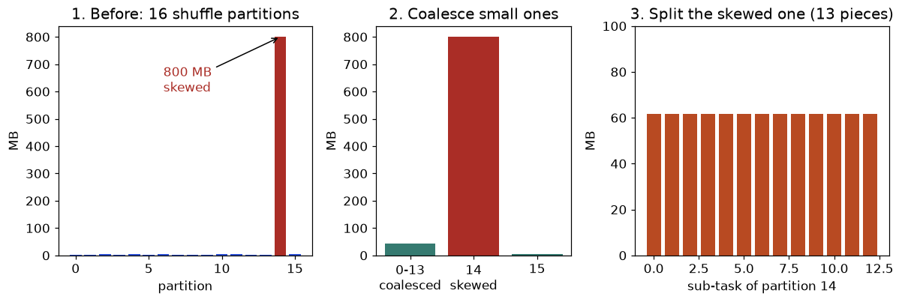

Your PySpark job from Chapter 9 gives correct answers, but it takes 3 hours, and the report is due in 1 hour. Where is the time going? You may already know the method from everyday troubleshooting: measure, find the bottleneck, change one thing, measure again. In Spark the bottleneck is almost always one of four things: too much data shuffled across the network, one skewed partition that makes a single task slow, partitions that are the wrong size, or memory pressure that spills data to disk. In this chapter you will learn each one with real numbers, simulate skew and salting with code you can run, learn what Adaptive Query Execution (AQE) does for you automatically, and learn how to read the Spark UI like a delivery tracking report. By the end you will be able to take a slow job, name the bottleneck and show before and after evidence, which is exactly what interviewers ask for.
Honest note: Spark is not installed here, so every PySpark line and setting is not run here. The skew, salting and sizing simulations are real Python that we ran. Setting names are from the documented Spark 3.x configuration; defaults can change between versions, so check the docs for yours.
Running example: ShopKart's events table, 100,000 rows in our simulation (2 billion in real life). Half of the events carry one "hot" key (a default or null user), which makes the skew easy to see.
A shuffle does five things in sequence: each map task writes its output to local disk split by target partition; the data is serialized; it travels across the network; the reduce task reads the pieces from all map tasks; it deserializes and (for joins and sorts) sorts them. So a shuffle costs disk, network, CPU and memory at once. With M map tasks and R reduce tasks, there are up to M × R small transfers.
| Operation | Shuffle? | Note |
|---|---|---|
select, filter, withColumn, explode | No (narrow) | Free of network |
groupBy().agg | Yes | Partial aggregation first reduces the data |
join (shuffle join) | Yes, both sides | Broadcast join avoids it |
distinct, dropDuplicates | Yes | Same as a groupBy |
orderBy | Yes (range partitioning) | Global sort is costly; avoid unless needed |
repartition(n) | Yes | Full redistribution |
coalesce(n) | No | Merges neighbours only |
Window with partitionBy | Yes | One shuffle per distinct partitioning |
After a shuffle, the number of output partitions is the setting spark.sql.shuffle.partitions, default 200. That number was chosen long ago, and it is wrong for most jobs: too few for big data (huge partitions, spill to disk) and too many for small data (200 tiny tasks that cost more to schedule than to run).
Rule of thumb: aim for shuffle partitions of roughly 100-200 MB each (some teams use 128 MB), and at least 2-4 times the number of slots so that every core stays busy and stragglers are absorbed.
Problem 10.1.1 A shuffle moves 200 GB. The default 200 partitions are used. The cluster has 10 executors with 4 cores each (40 slots). Target partition size: 128 MB. Is the default good? What should the number be?
| Formula | partitions = data size / target partition size; partition size = data / partitions |
|---|---|
| Plug in | 200 GB = 200 × 1,024 = 204,800 MB |
| Compute | With 200 partitions: 204,800 / 200 = 1,024 MB each (8 times the target). Wanted: 204,800 / 128 = 1,600 partitions. Waves = ⌈1,600 / 40⌉ = 40 |
| Answer | The default gives 1 GB partitions that probably spill to disk and run long. Use about 1,600 shuffle partitions (set spark.sql.shuffle.partitions=1600), which is 40 waves of 40 tasks. |
| Check | 1,600 × 128 MB = 204,800 MB = 200 GB. ✓. And 1,600 is a multiple of 40, so the last wave is full. |
| Why it matters | Time can be similar in both cases, but 1 GB partitions risk spill and out-of-memory failures (10.3). Right sizing gives safety and even work. For a small shuffle (2 GB), the default 200 partitions is the opposite problem: 10 MB tasks drown in scheduling overhead, so use about 40 partitions or let AQE coalesce them. |
df.repartition(200) makes 200 evenly sized partitions with a full shuffle. df.repartition(200, "customer_id") hashes by key (same key, same partition), useful before several operations on the same key.df.coalesce(20) reduces to 20 partitions by merging, with no full shuffle. Good right before a write to avoid thousands of tiny files.partitionBy and the data is spread across partitions). Writing with 2,000 partitions into 365 daily folders can make 730,000 tiny files: the small-file problem of Chapter 3.3. Target files of 128 MB to 1 GB. Use repartition("order_date") before partitionBy("order_date") so each folder gets few files.spark.sql.files.maxPartitionBytes (default 128 MB). Thousands of tiny input files produce thousands of tiny tasks, so compact them first (Chapter 3.3 and the table formats of 3.4).df.explain() prints the physical plan. df.explain("formatted") is easier to read (not run here). Read it bottom to top: the scan is at the bottom. Look for:
PushedFilters: [...] on the Parquet scan: the filter was pushed to the file reader (predicate pushdown).ReadSchema: struct<order_id,amount>: only needed columns are read (column pruning). If it lists every column, you probably wrote select("*") or used a UDF that needs the whole row.Exchange: a shuffle. Count them: each is a stage boundary.BroadcastHashJoin versus SortMergeJoin: the join strategy.HashAggregate appearing twice around an Exchange: partial and final aggregation, as in our hand example in 9.2."How many shuffles does this job have and can you remove one?" is the first question in any Spark review. You answer by reading explain() and counting Exchange lines.
spark.sql.shuffle.partitions once for the whole cluster. Different stages and different days have different data volumes. Prefer AQE (10.2) to adapt automatically, and set a sensible base for big jobs.Check yourself
spark.sql.shuffle.partitions? Answer: 200.repartition or coalesce? Answer: coalesce.Exchange mean in a plan? Answer: a shuffle (data movement), which starts a new stage.Skew happens when a few key values hold a large share of the rows: a null or default user id, a very popular product, one huge customer, a country code "IN" in an India-heavy dataset. After the hash shuffle, all rows with the same key land in one partition.
Signs in the Spark UI (10.3): in the stage's task table, the max task duration is many times the median; one task reads far more shuffle data than the others; one executor shows heavy spill or out-of-memory.
We simulate a shuffle of 100,000 events into 8 partitions by key hash. Half the events (50,000) belong to one hot key; the other 50,000 are spread over 5,000 users. Predict: what will the largest partition be compared with the mean? Then we salt the hot key: add a random suffix 0-7 to it (hot#3) so it splits into 8 sub-keys. Predict again.
import random, zlib, collections, statistics
random.seed(1)
P=8; N=100000
keys=["hot"]*(N//2)+[f"user{random.randint(1,5000)}" for _ in range(N//2)]
def part(k): return zlib.crc32(k.encode())%P # deterministic hash
def sizes(ks):
c=collections.Counter(part(k) for k in ks); return [c.get(i,0) for i in range(P)]
s=sizes(keys); print("plain hash partition sizes:",s)
print(f"max={max(s)} mean={statistics.mean(s):.0f} max/mean={max(s)/statistics.mean(s):.2f}")
S=8
salted=[f"{k}#{random.randrange(S)}" if k=="hot" else k for k in keys]
s2=sizes(salted); print("salted sizes :",s2)
print(f"max={max(s2)} mean={statistics.mean(s2):.0f} max/mean={max(s2)/statistics.mean(s2):.2f}")
for lab,ss in (("plain",s),("salted",s2)):
print(f"{lab}: stage time = max partition / 10000 rows/s = {max(ss)/10000:.2f} s (ideal {N/P/10000:.2f} s)")Real output:
plain hash partition sizes: [6140, 6284, 6304, 6192, 6201, 6376, 6224, 56279]
max=56279 mean=12500 max/mean=4.50
salted sizes : [12525, 12461, 12476, 12500, 12424, 12526, 12496, 12592]
max=12592 mean=12500 max/mean=1.01
plain: stage time = max partition / 10000 rows/s = 5.63 s (ideal 1.25 s)
salted: stage time = max partition / 10000 rows/s = 1.26 s (ideal 1.25 s)Line by line:
part(k) is the hash partitioner: crc32(key) mod 8. The same key always gives the same partition. That is what makes joins and groupBys possible, and also what makes skew possible.hot rows plus its normal share of about 6,279 (6,279 + 50,000 = 56,279 ✓).hot#0 to hot#7, which hash to different partitions. All partitions are within 12,424 to 12,592: max/mean = 1.01, and stage time 1.26 s, almost ideal. A speed-up of 5.63 / 1.26 = 4.5 times.Aggregation (two-step). Add a salt, aggregate on (key, salt), then aggregate again on key:
# not run here
salted = df.withColumn("salt", (F.rand() * 8).cast("int"))
step1 = salted.groupBy("user_id", "salt").agg(F.sum("amount").alias("part"))
final = step1.groupBy("user_id").agg(F.sum("part").alias("total"))Step 1 spreads the hot key over 8 partitions; step 2 combines at most 8 rows per key, which is tiny. This works because sum, count, min and max can be combined (an average needs sum and count separately).
Join. The big, skewed table gets a random salt 0-7 on its key; the other table is duplicated 8 times, once with each salt, so every salted key finds its partner:
Problem 10.2.1 events (skewed, 2 billion rows) joins users (5,000 rows after we keep only the hot users) on user_id. Salting with S = 8: what is the new row count of the salted users side, and what happens to the events side?
| Step 1 | Events side: user_id becomes user_id#r with a random r in 0 to 7. The row count is unchanged (2 billion), but a hot key is now spread over 8 partitions. |
|---|---|
| Step 2 | Users side: each row is copied 8 times (user_id#0 ... user_id#7). |
| Compute | 5,000 × 8 = 40,000 rows. |
| Answer | The events side stays at 2 billion rows; the users side grows to 40,000 rows. |
| Check | Each event finds exactly one match: its key and salt exist exactly once in the duplicated side, so the join result still has 2 billion rows (no fan-out). |
| Why it matters | The cost of salting is the duplication of the small side. Only salt the keys that are actually hot, and keep S small (8 to 32). |
We saw in 9.3 that a broadcast join sends the small table to every executor. Our estimate for events and devices: shuffle join moves about 2 GB + 0.05 GB = 2.05 GB, broadcast moves 50 MB × 20 executors = 1.0 GB (real output of the simulation: shuffle join moves ~ 2.05 GB; broadcast moves ~ 1.0 GB (small table copied to each of 20 executors)). The savings grow with the size of the big side because the broadcast cost only depends on the small side.
# not run here
from pyspark.sql.functions import broadcast
out = events.join(broadcast(devices), "device_id")
spark.conf.set("spark.sql.autoBroadcastJoinThreshold", 100 * 1024 * 1024) # 100 MBRules: spark.sql.autoBroadcastJoinThreshold defaults to 10 MB; Spark automatically broadcasts tables below it, based on size estimates (which can be wrong when statistics are missing). The broadcast table must fit in driver and executor memory. Do not broadcast something that is 5 GB.
Spark cannot know data sizes and skew before running. AQE (on by default in recent Spark 3.x versions; setting spark.sql.adaptive.enabled) re-plans at stage boundaries, using real statistics from the stage that just finished. It does three main things:
| AQE feature | What it fixes | Setting (check docs for defaults) |
|---|---|---|
| Coalesce shuffle partitions | Too many small shuffle partitions: merges neighbours up to an advisory size (default about 64 MB) | spark.sql.adaptive.coalescePartitions.enabled, spark.sql.adaptive.advisoryPartitionSizeInBytes |
| Switch join strategy | Plan said sort-merge, but after a filter one side is tiny: converts to broadcast at runtime | built in with AQE |
| Skew join handling | Splits an oversized partition of one side into several sub-partitions and replicates the matching partition of the other side | spark.sql.adaptive.skewJoin.enabled, skewedPartitionFactor (default 5), skewedPartitionThresholdInBytes (default about 256 MB) |
A partition is treated as skewed when it is both bigger than the factor times the median partition size and bigger than the byte threshold.
Problem 10.2.3 After a shuffle the five partitions of the left side are 100, 110, 95, 105 and 900 MB. With factor 5 and threshold 256 MB, which partitions does AQE treat as skewed? And with 2,048 MB of total shuffled data into 200 partitions, how many partitions does AQE coalesce to with a 64 MB advisory size?
| Step 1 | Median of (95, 100, 105, 110, 900) = 105 MB. Factor × median = 5 × 105 = 525 MB. |
|---|---|
| Step 2 | 900 MB is greater than 525 MB and greater than 256 MB: skewed. The others are below 525 MB: normal. |
| Step 3 | Coalescing: 2,048 / 64 = 32. |
| Answer | Only the 900 MB partition is skewed; and the 200 small partitions are merged into about 32. |
| Check | Both conditions are required: a 400 MB partition would be above 256 MB but below 525 MB, so it would not be treated as skewed. This matches our real calculation: median 105 5x 525 skewed: [900]. |
| Why it matters | AQE fixes moderate skew automatically, but extreme skew (one key holding 50% of the data, as in our simulation) or skew in a groupBy still needs your manual salting. |
Limits of AQE: it works only on shuffles in Spark SQL/DataFrame (not RDD code); it needs the stage to finish first; it cannot fix skew in a groupBy the way it handles joins; and it will not rewrite a bad algorithm.
The interview task "fix a skewed Spark join and prove the improvement" (from the skill map) is exactly 10.2: find the hot key, show max-versus-median task time in the UI before, apply broadcast or salting or AQE, show the same two numbers after.
df.groupBy("key").count().orderBy(F.desc("count")).show(10) first. Very often the hot key is null or an empty string, and a one-line filter or a separate path for nulls removes the skew without any salting.Check yourself
Remember from 9.2: without a cache each action recomputes everything. df.cache() marks the DataFrame to be kept after it is first computed, and df.persist(level) lets you choose where: memory only, memory and disk (the usual default for DataFrames), or disk only. The first action pays the full cost; later ones read the stored partitions.
When to cache: the same DataFrame is used by 2 or more actions or branches, and recomputing it is expensive (a big join or a UDF). When not to: used once (cache only costs memory), or it is larger than the memory available (it evicts other data or spills). Always unpersist() when done. Check the Storage tab of the UI to see what is cached and what fraction is in memory.
Problem 10.3.1 A DataFrame costs 12 minutes to compute and feeds 4 actions. Reading it back from the cache costs 30 seconds. Time with and without a cache?
| Formula | without = actions × compute; with = compute + (actions − 1) × read |
|---|---|
| Plug in | without: 4 × 12; with: 12 + 3 × 0.5 |
| Compute | without = 48 minutes; with = 12 + 1.5 = 13.5 minutes |
| Answer | 48 minutes drops to 13.5 minutes, a 3.6 times improvement (48 / 13.5 = 3.56). |
| Check | If there were only one action, with = 12 and without = 12: the cache only helps with reuse. |
| Why it matters | Cache is a trade of memory for time. It is the easiest optimization to apply and the easiest to misuse. |
An executor is a JVM with a heap. Spark divides the heap like this (default fractions; check your version):
executor memory (heap), e.g. 16,384 MB (16 GB)
|- reserved: 300 MB (for Spark internals)
|- user memory: 40% of the rest (your data structures, UDF objects)
`- unified Spark memory: 60% of the rest (spark.memory.fraction = 0.6)
|- storage (cache) } shared, a boundary (spark.memory.storageFraction = 0.5)
`- execution (shuffle, joins, sorts, aggregations) } that can move either way
+ memoryOverhead outside the heap: max(384 MB, 10% of executor memory)
(Python workers, off-heap, network buffers)Real arithmetic (run here): unified memory = (16,384 − 300) × 0.6 = 9,650.4 MB. With 4 cores, 4 tasks run at once in that executor, so each task has about 9,650.4 / 4 = 2,412.6 MB of execution and storage memory to share. Overhead = max(384, 0.1 × 16,384) = 1,638.4 MB, so the container requested from the cluster manager is about 16,384 + 1,638 = 18,022 MB.
Settings you tune (all not run here): spark.executor.memory, spark.executor.cores, spark.executor.instances (or dynamic allocation), spark.driver.memory, spark.executor.memoryOverhead.
Problem 10.3.2 An executor has 8 GB (8,192 MB) heap and 4 cores. A shuffle partition of 1,024 MB (the default-200-partition case for 200 GB) is processed by each task. Does it fit?
| Step 1 | Unified memory = (8,192 − 300) × 0.6 = 7,892 × 0.6 = 4,735.2 MB. |
|---|---|
| Step 2 | Per task with 4 concurrent tasks: 4,735.2 / 4 = 1,183.8 MB. |
| Step 3 | A task must hold its input partition plus hash tables and sort buffers, which are often 1.5 to 3 times the data size in memory (deserialized Java objects are bigger than compressed Parquet). A 1,024 MB partition may need 1,500 to 3,000 MB, more than 1,183.8 MB available. |
| Answer | It will probably not fit: the task spills to disk, or fails with an out-of-memory error. Use smaller partitions (about 128 MB), fewer cores per executor, or more memory. |
| Check | With 128 MB partitions: even at 3 times expansion, 384 MB is less than 1,183.8 MB. ✓ |
| Why it matters | This explains why simply increasing memory is not the first fix: partition size and concurrency matter just as much. |
Spill means execution memory ran out, so Spark writes intermediate data to local disk and reads it back: slow but not fatal. Out-of-memory (OOM) kills the executor: the task is retried, and after several failures the job fails. Garbage collection (GC) time above about 10% of task time means the heap is under pressure.
Rules of thumb: about 4 to 5 cores per executor (too many cores starve each task of memory and cause HDFS or network contention); give executors enough memory for 128-256 MB partitions per core; do not broadcast huge tables; collect() only small results, because the driver has its own memory limit (spark.driver.memory).
The UI (web page, usually port 4040 on the driver for a live application; the History Server shows finished ones) has these tabs:
| Tab | What to read | Healthy | Warning sign |
|---|---|---|---|
| Jobs | Jobs per action with duration | A few jobs | Hundreds of tiny jobs (a loop of actions) |
| Stages | Per stage: duration, tasks, input, shuffle read and write, spill | Task times close to each other | Max task time much more than median; large spill |
| Stage detail, Summary Metrics | Min, 25th, median, 75th, max for duration, input size, shuffle read | max / median under about 2 | max / median above about 5 means skew |
| SQL / DataFrame | The plan with row counts and time per operator | Broadcast on small joins | A huge Exchange; SortMergeJoin with a tiny side |
| Storage | Cached RDDs and DataFrames, fraction cached | Expected data cached | Cached data never reused |
| Executors | Memory, GC time, failed tasks, shuffle, per executor | Even load | One executor with far more shuffle read, or GC above 10% |
Problem 10.3.3 The Stage 7 summary shows task duration: min 4 s, 25th 6 s, median 7 s, 75th 8 s, max 190 s. There are 400 tasks, 80 slots. Diagnose and estimate the possible gain.
| Step 1 | max / median = 190 / 7 = 27: heavy skew (a few tasks only). |
|---|---|
| Step 2 | Ideal stage time if the work were even: total work ≈ 400 × 7 s = 2,800 task-seconds, over 80 slots = 35 s. Actual stage time is at least 190 s because of the straggler. |
| Step 3 | Check the "shuffle read size" column for the same max task: if it is far larger than the median, the cause is data skew, not a slow machine (a slow machine would show normal input size but a long time). |
| Answer | Data skew in a shuffle stage. Fixing it (broadcast, AQE skew join, salting, or removing null keys) could bring the stage from about 190 s toward 35 to 50 s, a 4 to 5 times gain. |
| Check | 190 / 35 = 5.4. (The estimate is approximate because the mean task time is above the median, so the real ideal would be a bit higher.) |
| Why it matters | The percentile table is the same skill as reading a delivery report's 90th and 99th percentile: the tail, not the average, tells you what is wrong. |
The capstone task "PySpark job on 10M+ rows with documented tuning (before and after Spark UI evidence)" is this method. The habits of any careful measurer (baseline, one change at a time, percentiles) apply directly.
Check yourself
Section 10.2 listed what Adaptive Query Execution does. Here you will do what AQE does, by hand and in code, on one set of numbers, and then practise the other half of the skill: looking at a stage's task numbers and saying what is wrong. Real AQE is more careful than our toy (it also looks at map-side statistics and respects ordering rules), but the three decisions are the same.
A shuffle stage has just finished and produced 16 partitions. All are a few MB except partition 14, which is 800 MB (a hot key). The advisory partition size is 64 MB, the skew factor is 5 and the skew threshold is 256 MB. Predict before you read the output: how many tasks will the next stage run after coalescing, and how many pieces will the 800 MB partition become?
# AQE by hand: the three decisions, using real partition sizes (MB) from a finished shuffle stage.
import statistics
advisory = 64
sizes = [3, 2, 5, 1, 4, 2, 6, 3, 2, 1, 4, 5, 3, 2, 800, 4] # 16 shuffle partitions, one is huge
# 1) coalesce: walk the partitions in order, start a new group when adding would pass the advisory size
groups, cur, cur_sum = [], [], 0
for i, s in enumerate(sizes):
if cur and cur_sum + s > advisory:
groups.append(cur); cur, cur_sum = [], 0
cur.append(i); cur_sum += s
groups.append(cur)
print("partitions before:", len(sizes), " tasks after coalescing:", len(groups))
for g in groups:
print(" group", g[0], "to", g[-1], "=", sum(sizes[i] for i in g), "MB")
# 2) skew split: a partition is skewed if > factor * median AND > threshold
factor, threshold = 5, 256
med = statistics.median(sizes)
skewed = [i for i, s in enumerate(sizes) if s > factor * med and s > threshold]
print("median", med, "MB; skewed partitions:", skewed)
for i in skewed:
pieces = -(-sizes[i] // advisory) # ceiling division: split into advisory sized pieces
print(f" partition {i}: {sizes[i]} MB -> {pieces} sub-tasks of about {sizes[i]/pieces:.0f} MB")
print(" (the other join side's matching partition is read once per piece)")
# 3) join switching: after a filter the real size of one side is tiny, so use broadcast
broadcast_threshold = 10 # MB
planned_right_size = 4000 # MB, the estimate used at planning time (no statistics)
actual_right_after_filter = 7
print("planned join:", "sort-merge" if planned_right_size > broadcast_threshold else "broadcast")
print("after stage finished, actual size", actual_right_after_filter, "MB ->",
"broadcast" if actual_right_after_filter <= broadcast_threshold else "sort-merge")partitions before: 16 tasks after coalescing: 3
group 0 to 13 = 43 MB
group 14 to 14 = 800 MB
group 15 to 15 = 4 MB
median 3.0 MB; skewed partitions: [14]
partition 14: 800 MB -> 13 sub-tasks of about 62 MB
(the other join side's matching partition is read once per piece)
planned join: sort-merge
after stage finished, actual size 7 MB -> broadcast
How to read it: the left chart is what the stage produced: fifteen small bars and one tall red bar. The middle chart shows the small partitions merged into one task of 43 MB, so Spark pays task start-up cost once instead of fourteen times. The right chart shows the red partition cut into 13 pieces of about 62 MB, so thirteen tasks share work that one task would have done alone.
| Decision 1: coalesce | Walk the partitions in order and merge neighbours until the next one would pass 64 MB. The 14 small ones total 3+2+5+1+4+2+6+3+2+1+4+5+3+2 = 43 MB, so they become one task. 16 tasks become 3. |
|---|---|
| Decision 2: skew split | Median is 3 MB, so factor x median = 15 MB. Partition 14 (800 MB) is over 15 MB and over 256 MB, so it is skewed. It is split into ceil(800 / 64) = 13 sub-tasks of about 62 MB. |
| Cost of splitting | The matching partition from the other join side is read by every sub-task, so it is read 13 times. Cheap if that side is small, painful if it is also large. |
| Decision 3: join switch | Planning used a pessimistic estimate of 4,000 MB for the right side, so it chose sort-merge. After the filter ran the true size was 7 MB, under the 10 MB broadcast threshold, so AQE switches to broadcast and skips sorting the left side. |
| Answer | 3 tasks after coalescing, and 13 pieces for the skewed partition. |
groupBy, and it cannot help when the whole load is one key that cannot be split. Right: keep AQE on, still look at the key distribution, and use salting or a broadcast when AQE does not apply.Open the stage page, find the task summary table (min, 25th percentile, median, 75th percentile, max), and compare max with median. Below are task durations in seconds from three runs of a stage. Decide for each one: what is wrong, and what do you try first? The code computes the numbers the UI would show and the wall time on 12 cores.
# Reading a Spark UI stage summary: tasks' durations (seconds) from three runs of the same stage.
import statistics
runs = {
"A skewed": [4, 5, 4, 5, 6, 5, 4, 5, 5, 4, 5, 190],
"B healthy": [5, 6, 5, 5, 6, 7, 5, 6, 5, 6, 5, 6],
"C too many": [0.2] * 400,
}
for name, d in runs.items():
q = statistics.quantiles(d, n=4)
mx, med = max(d), statistics.median(d)
total = sum(d)
print(f"{name:11s} tasks={len(d):3d} median={med:5.2f} max={mx:6.1f} max/median={mx/med:5.1f} "
f"sum={total:6.1f}s")
# wall time with 12 cores: tasks run in waves; the stage ends when the last finishes
def wall(d, cores):
free = [0.0] * cores
for t in d:
i = free.index(min(free)); free[i] += t
return max(free)
for name, d in runs.items():
print(name, "wall time on 12 cores:", round(wall(d, 12), 1), "s; ideal:", round(sum(d)/12, 1), "s")A skewed tasks= 12 median= 5.00 max= 190.0 max/median= 38.0 sum= 242.0s
B healthy tasks= 12 median= 5.50 max= 7.0 max/median= 1.3 sum= 67.0s
C too many tasks=400 median= 0.20 max= 0.2 max/median= 1.0 sum= 80.0s
A skewed wall time on 12 cores: 190.0 s; ideal: 20.2 s
B healthy wall time on 12 cores: 7.0 s; ideal: 5.6 s
C too many wall time on 12 cores: 6.8 s; ideal: 6.7 s| Run A | Max is 190 s and the median is 5 s: max over median is 38. One task is the problem, the stage waits 190 s instead of an ideal 20 s. Diagnosis: skew. Try: look at the shuffle read size of that one task, find the hot key, then broadcast, salt or rely on AQE skew handling. |
|---|---|
| Run B | Max over median is 1.3 and wall time 7 s against an ideal 5.6 s. Diagnosis: healthy. Leave it alone. Tuning a healthy stage is wasted effort. |
| Run C | 400 tasks of 0.2 s each. The ratio is perfect but each task is so short that scheduling and start-up overhead (about 50 to 100 ms each in practice) becomes a large share. Diagnosis: too many small tasks (shuffle partitions too high for the data volume). Try: fewer shuffle partitions or leave AQE coalescing on. Our model ignores the overhead, which is why it still shows 6.8 s; in a real cluster this stage would be slower than its ideal. |
Problem 10.4.1 A stage has 200 shuffle partitions and 12.8 GB of shuffle data, spread evenly. The advisory size is 64 MB. How many tasks does AQE coalescing leave?
| Step 1 | 12.8 GB = 12,800 MB. Even spread: 12,800 / 200 = 64 MB per partition. |
|---|---|
| Step 2 | Each partition already equals the advisory size, so merging any two would pass 64 MB. |
| Answer | 200 tasks stay 200. Coalescing only helps when partitions are smaller than the advisory size. |
| Variant | With 1.28 GB the average is 6.4 MB, so about 1,280 / 64 = 20 tasks remain. |
Problem 10.4.2 The 800 MB partition is split into 13 pieces. The other side of the join has a matching partition of 50 MB. How much data is read in total for that key, and is the split worthwhile?
| Left side | 800 MB, read once in total (each piece reads its slice). |
|---|---|
| Right side | 50 MB read by each of 13 pieces: 13 x 50 = 650 MB. |
| Total | 800 + 650 = 1,450 MB, against 850 MB without a split. |
| Answer | The split reads 70% more bytes, but they are spread over 13 tasks. The slowest task now handles about 62 + 50 = 112 MB instead of 850 MB, so the stage gets about 7 times faster. Worth it. |
dynamicpruning subquery.df.explain("formatted"), or open the SQL tab. An AdaptiveSparkPlan isFinalPlan=false node means the plan can still change at run time. After the query finishes the final plan is shown, and that is the one that explains the timings.Practice (with answers)
groupBy("key")? Answer: a groupBy must put all rows of one key in one task to aggregate them. Splitting a join partition works because the other side can be replicated.Not run here: Spark itself. The numbers above come from our pure-Python model of the decisions. In a real cluster you confirm with the SQL tab's final plan and the stage's task table.
coalesce before writes and compact tiny input files.| Item | Rule or setting |
|---|---|
| Shuffle partitions | spark.sql.shuffle.partitions; data size / 128 MB |
| Broadcast threshold | spark.sql.autoBroadcastJoinThreshold (default 10 MB) |
| AQE | spark.sql.adaptive.enabled, ...skewJoin.enabled, ...coalescePartitions.enabled |
| Skew test | max / median task time; partition > 5 × median and > 256 MB |
| Salting | key#r, r in 0..S−1; duplicate the small side S times |
| Unified memory | (heap − 300 MB) × 0.6 |
| Plan | df.explain("formatted"); count Exchange |
| Cache | cache() / persist() / unpersist(); check the Storage tab |
1. (easy) What does Exchange mean in a physical plan? Answer: a shuffle, and the boundary between two stages.
2. (easy) Which is better for reducing the number of output files: repartition(1000) or coalesce(20)? Answer: coalesce(20) reduces to 20 without a full shuffle (and repartition(1000) would increase the number).
3. A shuffle of 60 GB with a target of 128 MB per partition. How many partitions? Answer: 60 × 1,024 / 128 = 480.
4. 100,000 rows into 8 partitions; one partition holds 56,279. Compute max / mean. Answer: mean = 12,500; 56,279 / 12,500 = 4.50.
5. (what is the output?) After salting with S = 8, a hot key of 50,000 rows is split evenly. How many rows does each sub-key hold? Answer: 50,000 / 8 = 6,250 (random salting gives about that).
6. (find the bug) A join of a skewed 1 TB events table to a 30 MB users table is a SortMergeJoin and takes 2 hours with one task running 100 minutes. Answer: the small side should be broadcast (30 MB is below typical thresholds; the automatic threshold is 10 MB by default). Use broadcast(users) or raise autoBroadcastJoinThreshold; this removes the shuffle and the hot partition.
7. Executor heap 32 GB (32,768 MB), 5 cores. Unified memory and memory per concurrent task? Answer: (32,768 − 300) × 0.6 = 32,468 × 0.6 = 19,480.8 MB; 19,480.8 / 5 = 3,896.2 MB.
8. (interview) "A Spark job is slow. Walk me through your approach." Answer: open the Spark UI, find the slowest stage, read the task percentile table and the shuffle and spill columns to classify it (skew, spill, too many or too few partitions, bad join), change one thing (broadcast, salting, partition count, caching), re-measure the same metrics, and document the before and after numbers.
9. (interview) "How would you handle a skewed join key?" Answer: first inspect the key distribution (often null is the hot key, so filter or handle it separately); broadcast the small side if possible; enable AQE skew join handling; if still skewed, salt the hot keys (random suffix on the big side, replicate the small side by the number of salts), and verify with the max-versus-median task times.
10. (scenario) The nightly job slows from 40 minutes to 3 hours after a new customer joined who accounts for 60% of orders, and the stage that grouped by customer shows one 150-minute task. What happened and what do you do? Answer: a new hot key caused skew in the groupBy. Use two-step aggregation with a salt for that key (partial sums by customer and salt, then final sum), or aggregate at a finer grain first (customer and day), confirm in the UI that max / median task time falls, and add an alert on stage-duration regression.
You are my patient, practical professor. I am a working professional moving into data roles, and English is my second language. Teach me why Spark shuffles are expensive and how to size spark.sql.shuffle.partitions. Use a 200 GB example, compute partition sizes, waves and spill risk step by step, and compare repartition with coalesce. Then ask me 4 questions one at a time and check my answers.
You are my patient, practical professor. I am a working professional moving into data roles, and I am learning data engineering. Topic: data skew in Spark, salting a groupBy and a join, broadcast joins and AQE skew handling. Give me a small hand-worked example with partition sizes, then 8 graded exercises with real numbers (max/mean ratio, salted row counts, broadcast bytes) and no solutions. I will paste my answers: [PASTE HERE].
You are my patient, practical professor. I am a working professional moving into data roles. Explain Spark's memory model: reserved, user, execution and storage memory, memoryOverhead, spill, OOM and GC time. Work through a 16 GB executor with 4 cores, calculating memory per task, and show how partition size changes the risk. Then quiz me one question at a time.
You are my patient, practical professor. I am a working professional moving into data roles, and I am learning to read the Spark UI. Describe each tab (Jobs, Stages, SQL, Storage, Executors) and the signs of skew, spill, small tasks and bad joins. Then invent 4 stage summaries with min, median, 75th and max task times and shuffle sizes, and ask me to diagnose each one and propose a fix. Correct me with reasons.
You are my patient, practical professor. I am a working professional moving into data roles, and I am applying for data engineer roles. Run a mock interview on Spark performance tuning: shuffles, partitions, skew, salting, broadcast joins, AQE, caching, memory settings and reading the Spark UI. Ask 8 questions one at a time, score each answer 1 to 5, give a model answer in simple English and one follow-up question.